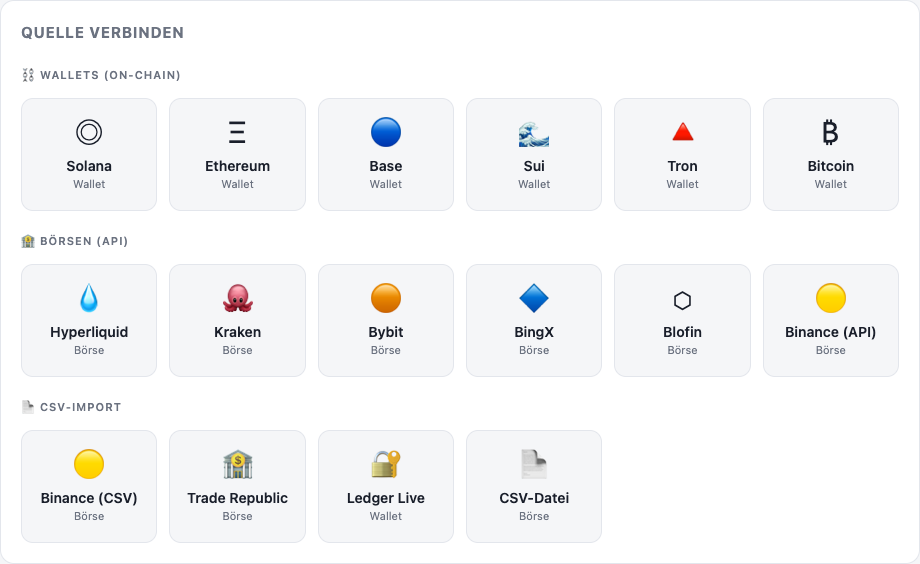
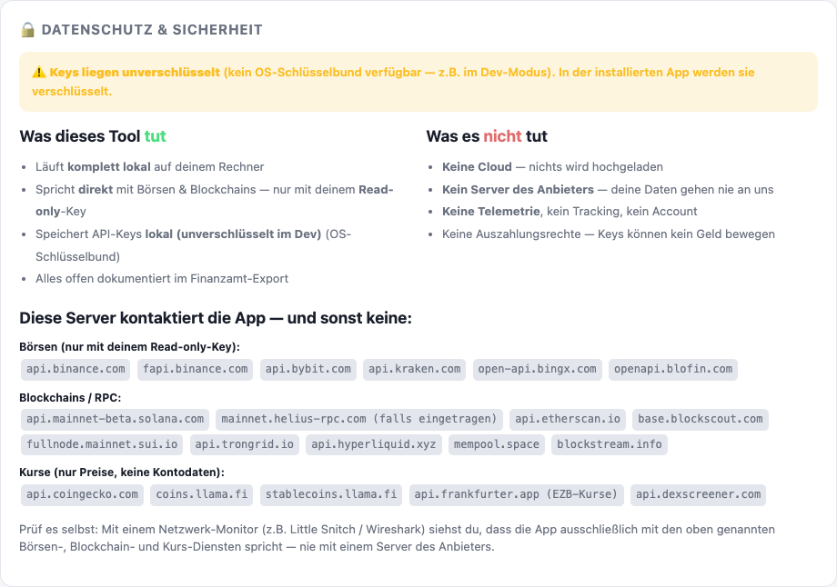
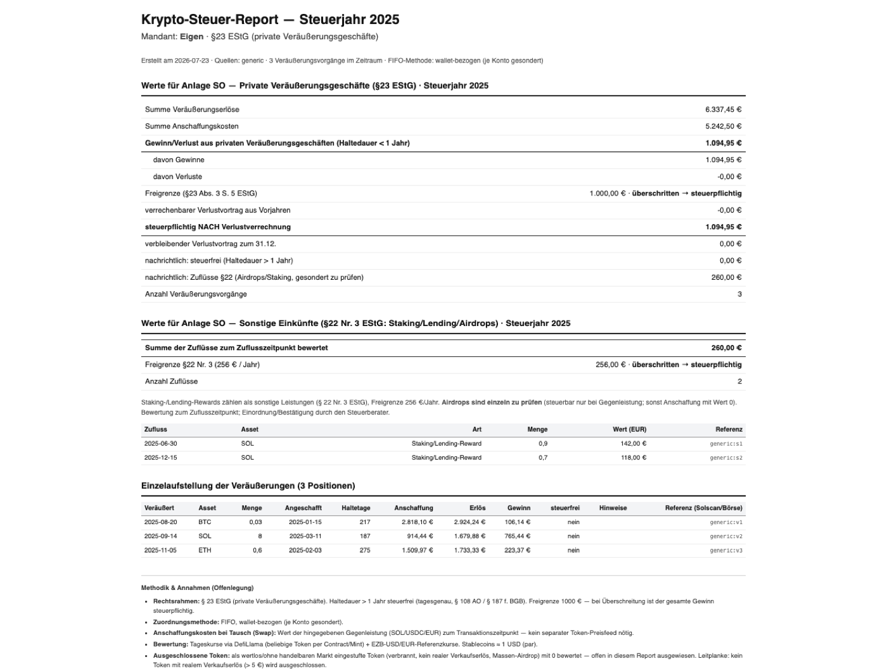

Zu viele Quellen
Ein halbes Dutzend Wallets, mehrere Börsen, Ledger, CSV-Exporte. Alles landet in unterschiedlichen Formaten — von Hand zusammenzuführen ist praktisch unmöglich.
Nachprüfbar statt Blackbox: deutsche Steuer-Reports (§23/§22/§20) für Solana, Ethereum, Bitcoin & 13 weitere Quellen — inklusive der komplizierten DeFi-Fälle. Ohne Cloud, ohne Konto, ohne dass deine Daten je deinen Rechner verlassen.

Viele Wallets, Solana-DeFi, Futures, Airdrops — und die großen Cloud-Tools verlangen, dass du dein komplettes Vermögen auf fremde Server hochlädst, um es überhaupt berechnen zu lassen.
Ein halbes Dutzend Wallets, mehrere Börsen, Ledger, CSV-Exporte. Alles landet in unterschiedlichen Formaten — von Hand zusammenzuführen ist praktisch unmöglich.
Swaps, Airdrops, wertlose Spam-Token, Anschaffungskosten über Wallet-Grenzen hinweg. Genau hier rechnen die meisten Tools falsch — oft um ein Vielfaches.
Cloud-Tools funktionieren nur, wenn du deine kompletten Wallet- und Handelsdaten hochlädst. Ein vollständiges Profil deines Vermögens — auf Servern, die du nicht kontrollierst.
Andere sagen „vertrau uns". Wir zeigen dir, was das Tool tut und was nicht — und du kannst es selbst kontrollieren.
Du lädst alles hoch.
Deine kompletten Wallet- und Handelsdaten liegen auf fremden Servern. Was dort passiert, ist eine Blackbox — du musst es glauben.
Alles bleibt auf deinem Rechner.
Die App holt nur ab, was sie zum Rechnen braucht — direkt von der Quelle. Jeder Datenfluss ist nachprüfbar.
Kein Kleingedrucktes: Die App sagt dir jederzeit, was lokal bleibt und was sie kontaktiert — inklusive einer ehrlichen Warnung, falls Keys mal nicht verschlüsselt liegen (z. B. im Dev-Modus). In der installierten App sind sie es.

Ehrlich und konkret: keine Feature-Liste zum Angeben, sondern die Dinge, die eine korrekte deutsche Krypto-Steuer wirklich braucht.
Wallets & Chains (Solana inkl. nativem Staking, Ethereum, Base, Bitcoin, Sui, Tron) + Börsen per Read-only-API + Trade Republic, Ledger und CSV.
Bewertet Swaps über den real geflossenen Gegenwert — nicht über fehleranfällige Feed-Preise. Zieht Anschaffungskosten über Wallet-Grenzen und behandelt wertlose Spam-Token korrekt.
Jede Einkunftsart landet dort, wo sie hingehört — mit tagesgenauer Haltefrist, Freigrenzen und BMF-konformer Zuordnung.
FIFO, wallet-bezogen (BMF-konform), Haltefrist tagesgenau, Freigrenze.
Staking & Airdrops, 256 € Freigrenze pro Jahr.
Futures/Perps → Anlage KAP, sauber herausgehalten.
Gleicht importierte Bewegungen gegen dein echtes On-Chain-Guthaben ab (Reconciliation) — der Beleg fürs Finanzamt, dass nichts fehlt.
API-Keys liegen im OS-Schlüsselbund (Keychain / Windows Credential Manager) — verschlüsselt, nur read-only, nie im Klartext neben deinen Daten.
Termingeschäfte werden sauber von §23 getrennt und mit Jahres-Summen für die Anlage KAP ausgewiesen — kein Vermischen der Einkunftsarten.
Getrennte Datenräume, abgabefertige Reports und ein Vollständigkeitsnachweis, den du dem Finanzamt hinlegen kannst.
Getrennte Datenräume pro Mandant. Keine Vermischung, kein Durcheinander — jeder Fall bleibt für sich.
Anlage SO (§23) + §22 (mit Freigrenze) + Anlage KAP (§20) + Einzelaufstellung + Vollständigkeitsnachweis. Druckbar als PDF.
Jeder Wert im Report ist nachvollziehbar bis zur On-Chain-Transaktion. Annahmen werden offen gekennzeichnet.

Dass wir das offen sagen, ist selbst ein Vertrauenssignal. Wir versprechen nichts, was wir nicht halten.
Mit echten Testern und im laufenden Ausbau. Du bekommst ein Werkzeug, das jeden Tag besser wird — und kannst mitgestalten.
Wir liefern Berechnung und Belege. Die finale steuerliche Einordnung trifft dein Berater — dafür haben wir alles sauber vorbereitet.
Wo Annahmen oder Schätzungen nötig sind, werden sie im Report offen gekennzeichnet — nicht versteckt. Du weißt immer, worauf ein Wert beruht.
Es gibt (noch) kein Konto und keinen Warenkorb — schreib uns einfach kurz, welche Börsen und Chains du nutzt und ob Mac oder Windows. Wir melden uns mit dem Download.
Lieber telefonisch? 0151 64500145